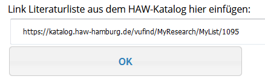

Um Medien in den Semesterapparat einzubinden, klicken Sie auf das Icon Neues Medium hinzufügen
Um Medien in den Semesterapparat einzubinden, klicken Sie auf das Icon Neues Medium hinzufügen
Im HAW-Katalog müssen Sie sich mit Ihrer Bibliothekskennung anmelden und können dann eine Literaturliste erstellen. Sie können sowohl Bücher und e-Books als auch Artikel in die Literaturliste aufnehmen. – Weitere Infos zum Erstellen einer Literaturliste finden Sie direkt im HAW-Katalog.
Den link der Literaturliste fügen Sie dann in Ihren Semesterapparat in ELSE ein.

Je nach Medientyp haben Sie versch. Optionen:
- Print-Bücher
können entweder als reine Literaturhinweise aufgenommen werden (diese
sind sofort „aktiv“) oder für einen physischen Semesterapparat
in der Fachbibliothek vor Ort bestellt werden.
Im zweiten Fall wird dieses Buch von den Bibliotheksmitarbeiter*innen bearbeitet und ist erst „aktiv“, wenn es im Semesterapparat der Fachbibliothek zur Verfügung steht. - E-Books und E-Artikel aus dem Bestand des HIBS sind sofort „aktiv“. Hinweis: Diese E-Medien sind nur innerhalb des HAW-Netzes bzw. per VPN-Zugang nutzbar.
- Print-Artikel können im Moment nur als Literaturhinweise eingebunden werden. Ein Digitalisierungsservice für Print-Artikel bzw. Auszüge aus Print-Büchern ist in Planung.
 Mit dem Icon „Bearbeiten“ können Sie
Mit dem Icon „Bearbeiten“ können Sie
- die allgemeinen Informationen des Semesterapparates bearbeiten (z.B. Änderung der Fachbibliothek oder des Semesters),
- die Ex- und Importfunktion nutzen (s. 14.),
- Hinweise für die Studierenden und/oder das Bibliothekspersonal eintragen.
(bei Print-Büchern, die sich im physischen Semesterapparat befinden)
bzw. „Deaktivieren“ (bei E-Books und Literaturhinweisen) können Sie einzelne Titel aus ELSE entfernen (lassen).
- neu bestellt (von Ihnen neu in Ihren Semesterapparat aufgenommen)
- wird bearbeitet (von der zuständigen HIBS Mitarbeiterin)
- ist aktiv (für die Studierenden in der ELSE-Liste sichtbar)
- wird entfernt (wurde von Ihnen zurückgegeben, oder die Ausleihfrist ist abgelaufen)
- inaktiv
(für die Studierenden in der ELSE-Liste nicht sichtbar)